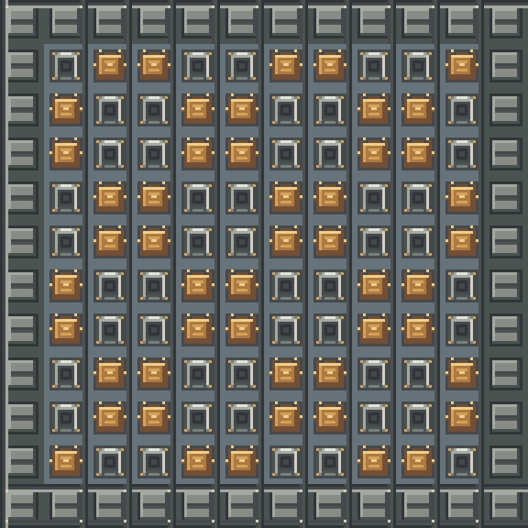
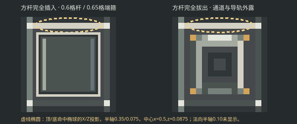
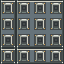
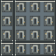
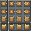
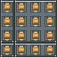

本页为SVG/PNG离线材质与阵列示意，不是Minecraft截图或客户端验收。八张PNG已获授权安装试用；游戏内外观仍待验收。顶/底操作位置按09共享补充冻结；椭圆只显示命中椭球X/Z投影。
每组左侧为本批保存的原版只读快照（SHA见mapping.json），右侧为候选SVG导出。
混排含驱动器、换料舱盖和原反应堆钢外壳；外缘引用现行只读CT钢壳图。

近景 · 4倍最近邻放大
远景 · 2倍最近邻缩放

方杆截面0.6格、端箍0.65格；虚线椭圆仅示顶/底本格命中椭球的X/Z投影（X半轴0.35、Z半轴0.075），法向半轴0.10不在此二维图中显示。




索引0–15沿用Create RECTANGLE 4×4布局，孤立格index12；八张PNG已安装试用，客户端外观尚未验收。